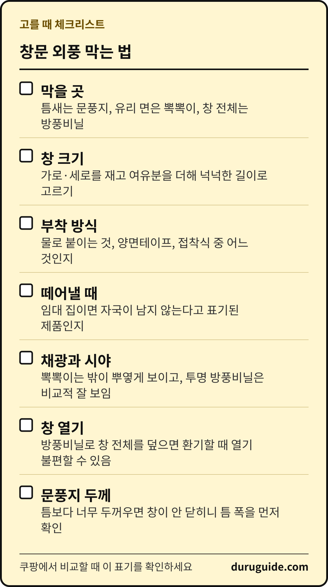

창문 외풍 막는 법, 방풍비닐·뽁뽁이·문풍지 차이
안 사도 되는 경우
창틀 틈이 거의 없고 유리만 차갑다면 문풍지는 필요 없어요. 두꺼운 커튼으로 견딜 만하면 아무것도 사지 않아도 돼요.
이런 상황이죠
난방을 켜도 창가에만 가면 서늘한 바람이 느껴지고, 커튼이 살짝 흔들리기도 해요. 오래된 창틀이나 단창이 있는 집, 베란다 확장을 한 집에서 특히 이런 이야기를 많이 해요. 방풍비닐, 뽁뽁이(단열 에어캡), 문풍지가 다 외풍에 좋다고 하는데 셋은 막는 곳이 달라서, 어디로 바람이 들어오는지부터 알아야 헛돈을 쓰지 않아요.
왜 생기나
외풍은 크게 두 갈래예요.
- 틈새 바람 — 창틀과 창짝 사이, 창짝끼리 겹치는 부분, 낡은 모헤어(털 모양 틈막이)가 닳은 곳으로 공기가 직접 들어와요.
- 유리 냉기 — 바람이 들어오지 않아도 차가운 유리 근처 공기가 식으면서 아래로 내려와 바람처럼 느껴져요.
틈새가 원인이면 틈을 막는 문풍지가 맞고, 유리 냉기가 원인이면 유리 면을 덮는 뽁뽁이나 창 전체를 감싸는 방풍비닐이 맞아요. 둘 다인 경우도 흔해요.
사기 전에 먼저 해볼 것
- 바람 길 찾기 — 창틀 둘레에 손등이나 휴지 한 장을 대고 천천히 움직여 보세요. 휴지가 흔들리는 곳이 틈이에요.
- 잠금장치 확인 — 창이 끝까지 닫히지 않았거나 잠금 손잡이를 덜 돌리면 틈이 벌어져요. 레일에 먼지나 이물질이 끼어 있지 않은지도 봐요.
- 모헤어 상태 보기 — 창짝 옆의 털 모양 틈막이가 눌리거나 빠졌다면 그 부분만 교체해도 많이 줄어요. 관리사무소나 집주인에게 먼저 물어보세요.
- 커튼 활용 — 두꺼운 커튼을 바닥까지 내려 두면 유리 냉기가 방 안으로 퍼지는 걸 어느 정도 줄일 수 있어요.
틈이 거의 없고 유리만 차갑다면 문풍지는 필요 없고, 창 앞 커튼만으로 견딜 만하면 아무것도 사지 않아도 돼요.
고를 때 체크리스트
| 확인할 것 | 보는 기준 |
|---|---|
| 막을 곳 | 틈새는 문풍지, 유리 면은 뽁뽁이, 창 전체는 방풍비닐 |
| 창 크기 | 가로·세로를 재고 여유분을 더해 넉넉한 길이로 고르기 |
| 부착 방식 | 물로 붙이는 것, 양면테이프, 접착식 중 어느 것인지 |
| 떼어낼 때 | 임대 집이면 자국이 남지 않는다고 표기된 제품인지 |
| 채광과 시야 | 뽁뽁이는 밖이 뿌옇게 보이고, 투명 방풍비닐은 비교적 잘 보임 |
| 창 열기 | 방풍비닐로 창 전체를 덮으면 환기할 때 열기 불편할 수 있음 |
| 문풍지 두께 | 틈보다 너무 두꺼우면 창이 안 닫히니 틈 폭을 먼저 확인 |
방풍비닐이나 뽁뽁이를 붙인 뒤에도 하루 몇 번은 짧게 환기해 주세요. 창을 꽁꽁 막아 두면 실내 습기가 빠지지 못해 창틀에 결로나 곰팡이가 생길 수 있어요. 가스나 등유 난방기를 쓰는 집이라면 환기는 더 꼭 챙겨야 해요.
이런 분께는 맞지 않아요
창틀 자체가 틀어져 창이 잘 닫히지 않는 경우에는 붙이는 제품으로는 한계가 있어요. 이럴 땐 창호 수리 상담이 먼저예요. 붙인 자국에 민감한 임대 계약이라면 계약 조건부터 확인하세요.
추천 제품 찾기
먼저 바람이 틈에서 들어오는지 유리에서 오는지 정하고, 창 크기를 재 두세요. 쿠팡에서 창문 방풍비닐을 볼 때는 크기, 부착 방식, 투명도, 떼어낼 때 자국 여부 표기를 비교해 보세요. 현재 가격은 쿠팡에서 확인해 주세요.

위 표의 표기를 비교해 보세요.
현재 가격은 쿠팡에서 확인해 주세요.
이 포스팅은 쿠팡 파트너스 활동의 일환으로, 이에 따른 일정액의 수수료를 제공받습니다.